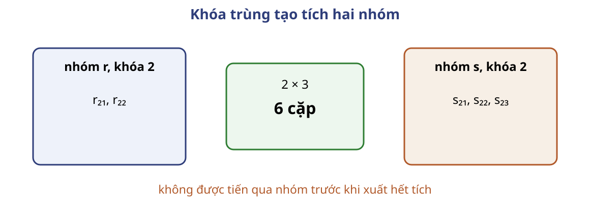
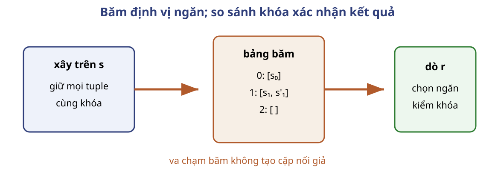
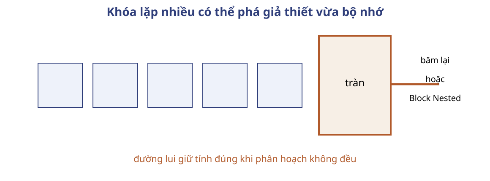
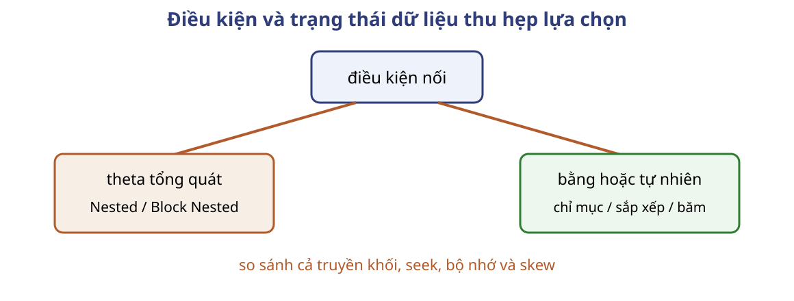

cho mỗi tuple tᵣ của r:
L ← tra_chỉ_mục(key(tᵣ))
cho mỗi RID trong L:
đọc tₛ tại RID
nếu key(tᵣ)=key(tₛ): xuất tᵣ • tₛ
# L rỗng hoặc đã cạn: chuyển sang tᵣ kế tiếp
Chi phí chỉ mục phải cùng đơn vị thời gian
$$C=b_r(t_T+t_S)+n_r c$$
$c$ là thời gian tra chỉ mục và đọc mọi tuple trong khớp một tuple ngoài.
Bất biến: trước mỗi tuple ngoài, mọi tuple ngoài đã đọc đã ghép với toàn bộ danh sách RID cùng khóa.
Câu hỏi: Chỉ mục tồn tại có đủ để Indexed Nested luôn tốt hơn không?
Sort-Merge Join dùng thứ tự của equi-join
Nếu khóa nhỏ hơn, bỏ qua cả nhóm khóa đó; nếu bằng nhau, ghép hai nhóm.
Quan hệ chưa sắp phải trả chi phí External Merge Sort trước khi nối.
$$G_r(2)\times G_s(2)\text{ có }2\cdot3=6\text{ cặp}$$
Tích hai nhóm giữ đủ bản sao

Giả mã xử lý theo nhóm khóa
while r và s chưa cạn:
nếu key(r) < key(s): bỏ nhóm hiện tại của r
ngược lại nếu key(r) > key(s): bỏ nhóm hiện tại của s
ngược lại:
Gᵣ ← nhóm hiện tại của r; Gₛ ← nhóm hiện tại của s
xuất mọi cặp trong Gᵣ × Gₛ
tiến cả hai qua nhóm
Bất biến của hai con trỏ
Bất biến: trước mỗi vòng, mọi cặp kết quả có khóa nhỏ hơn ít nhất một khóa hiện tại đã được xuất đúng một lần.
Nhóm nhỏ hơn không thể khớp về sau. Hai nhóm bằng nhau được xuất bằng tích Descartes.
Nhóm khóa lớn phá giả thiết quét một lần
Nguồn giả thiết mọi tuple của một giá trị khóa vừa bộ nhớ.
Nếu không, giữ nhóm nhỏ hơn và quét lại nhóm lớn hơn.
Nhóm rất lớn có thể cần tệp tạm hoặc thuật toán khác.
Câu hỏi: Hai dãy đã sắp nhưng khóa 7 lặp trên nhiều khối hơn bộ nhớ. Có còn khẳng định mỗi khối chỉ đọc một lần không?
Không nếu không có cơ chế giữ, đánh dấu hoặc ghi tạm nhóm.
Hash Join trong bộ nhớ xây trên phía nhỏ
Áp dụng cho nối bằng và nối tự nhiên.
Phía xây
Toàn bộ quan hệ nhỏ vừa bộ nhớ.
Phía dò
Đọc tuần tự quan hệ còn lại.
Xây một lần, dò một lần
Đọc $s$ và xây bảng băm theo khóa nối.
Đọc từng tuple $t_r$ của $r$.
Dò ngăn $h(t_r.key)$.
Kiểm khóa thật và xuất mọi tuple khớp.
Va chạm và bản sao là hai việc khác nhau

Giả mã giữ danh sách theo khóa
H ← bảng băm rỗng
cho mỗi tₛ trong s: thêm tₛ vào danh sách H[h(key(tₛ))]
cho mỗi tᵣ trong r:
cho mỗi tₛ trong H[h(key(tᵣ))]:
nếu key(tᵣ) = key(tₛ): xuất tᵣ • tₛ
Bảng băm không bỏ cặp trùng khóa
Bất biến khi dò: trước mỗi $t_r$, bảng băm chứa mọi tuple của $s$; mọi tuple $r$ đã đọc đã được ghép với toàn bộ tuple $s$ cùng khóa.
Cùng khóa cho cùng giá trị băm; kiểm khóa loại va chạm giả.
Khi phía xây vừa RAM, mỗi đầu vào đọc một lần
$$T=b_r+b_s$$
Seek phụ thuộc độ liên tiếp của hai lượt quét; bảng băm nằm trong RAM.
Câu hỏi: Nếu $s$ có hai tuple cùng khóa, bảng băm được phép chỉ giữ tuple cuối không?
Grace Hash Join đưa phân hoạch ra đĩa
Phía xây lớn hơn vùng $M-2$ nên không thể xây một bảng băm duy nhất.
Chia cả hai quan hệ bằng cùng hàm $h$, rồi nối từng cặp phân hoạch.
Cùng hàm $h_1$ tạo các cặp phân hoạch
Với $h_1(k)=k\bmod2$:
phía xây $s$
$s_0=[2,4]$, $s_1=[1]$
phía dò $r$
$r_0=[2,6]$, $r_1=[3]$
Chỉ $(r_0,s_0)$ và $(r_1,s_1)$ cần được nối.
Sáu phân hoạch chỉ đủ khi gần cân bằng
Ví dụ nguồn: $M=20$, phía xây 100 khối, phía dò 400 khối.
$$M-2=18,\quad 100/6\approx16{,}7<18$$
Điều kiện thực thi là $\max_i b_{s_i}\le18$; trung bình 16,7 không bảo đảm điều này.
Chỉ phân hoạch xây phải vừa bộ nhớ
$s_i$
Phải vừa vùng xây $M-2$.
$r_i$
Được đọc tuần tự để dò.
Dùng hàm $h'$ khác $h$ cho bảng băm trong RAM.
Vết dò dùng $h_2$ vẫn phải kiểm khóa
Trong $(r_0,s_0)$, dùng $h_2(k)=\lfloor k/2\rfloor\bmod2$: ngăn 0 có $[s_4]$, ngăn 1 có $[s_2]$.
Dò $r_2$ vào ngăn 1, xuất $(r_2,s_2)$.
Dò $r_6$ cũng vào ngăn 1 nhưng không xuất cặp.
$h_2\ne h_1$; va chạm chỉ tạo ứng viên.
Hàng đợi bảo đảm xử lý cả phân hoạch tràn
Q ← [(r,s)]
while Q không rỗng:
(R,S) ← lấy_đầu(Q); chia bằng hàm h mới
cho mỗi cặp (Rᵢ,Sᵢ):
nếu b(Sᵢ) ≤ M−2: build–probe(Rᵢ,Sᵢ)
ngược lại nếu max(b(Rᵢ),b(Sᵢ)) < max(b(R),b(S)):
thêm (Rᵢ,Sᵢ) vào Q
ngược lại: Block-Nested(Rᵢ,Sᵢ)
Mỗi cặp đầu vào được quyết định đúng một lần
Bao phủ: cùng khóa cho cùng $h$, nên hai tuple đi vào đúng một cặp $(r_i,s_i)$.
Các phân hoạch rời nhau và mỗi tuple thuộc đúng một phân hoạch. Build–probe hoặc đường lui kiểm cặp đó đúng một lần và so khóa thật.
Phân hoạch lệch cần đường lui hữu hạn

Chi phí ba lượt chỉ đúng khi không tràn
không đệ quy $1.500$ truyền
khối biên $1.524$ truyền
$b_b=3$ $336$ seek
Kiểm tra ba giả thiết băm
Câu hỏi: Những phát biểu nào cần để Grace Hash Join chạy đúng và dừng?
Cùng khóa dùng cùng phân hoạch.
Bảng băm giữ mọi bản sao và kiểm khóa.
Mọi phân hoạch xây vừa $M-2$, hoặc có đường lui hữu hạn.
Điều kiện nối thu hẹp họ thuật toán

So sánh trên cùng mô hình chi phí
Thuật toán
Điều kiện
Tái sử dụng
Rủi ro chính
Nested
theta
không
$n_r b_s$
Block Nested
theta
$M-2$ khối
nhiều lượt quét
Indexed Nested
nối bằng + chỉ mục
tra cứu
I/O ngẫu nhiên
Sort-Merge
nối bằng + thứ tự
nhóm khóa
sắp, nhóm lớn
Hash/Grace
nối bằng
ngăn/phân hoạch
lệch, tràn
Ba trạng thái của student–takes
takes có chỉ mục ID
Ước lượng Indexed Nested.
Hai phía đã sắp ID
Sort-Merge quét 500 khối.
student vừa RAM
Hash đọc 500 khối.
Nếu không trạng thái nào đúng, xét Block Nested hoặc Grace.
Quy trình chọn thuật toán nối
Chốt nối theta hay nối bằng.
Chốt $n_r,n_s,b_r,b_s,M$ và bản sao khóa.
Kiểm trạng thái sắp và chỉ mục.
Tính truyền khối và seek cho cả hai hướng.
Kiểm nhóm lớn, phân hoạch lệch và đường lui.
Bài tập dùng lại ba quyết định
15.3 so chi phí bốn họ
15.4 sửa I/O chỉ mục thứ cấp
15.5 cận thấp khi RAM vô hạn
Câu hỏi: Công thức nào trong bài phụ thuộc trực tiếp vào $M-2$?
Bài tập trên lớp
15.3: ước lượng chi phí bốn chiến lược nối.
15.4: giảm đọc ngẫu nhiên của chỉ mục thứ cấp.
15.5: đạt chi phí I/O thấp nhất khi bộ nhớ vô hạn.
Bài 15.3 — Dữ kiện và số khối
$r_1(A,B,C)$ có 20.000 tuple, 25 tuple/khối.
$r_2(C,D,E)$ có 45.000 tuple, 30 tuple/khối.
Yêu cầu: ước lượng truyền khối và seek cho Nested, Block Nested, Merge và Hash Join của $r_1\bowtie r_2$.
Sản phẩm đầu tiên: tính $b_{r_1},b_{r_2}$ và nêu giả thiết về $M$.
Bài 15.3 — Tính cả hai hướng vòng lặp
Yêu cầu: với mỗi hướng chọn quan hệ ngoài, tính Nested và Block Nested.